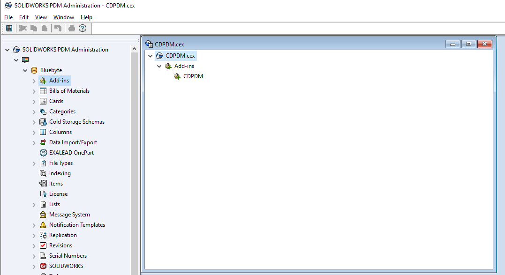
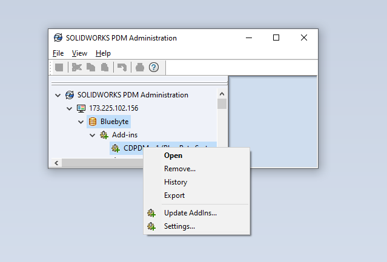
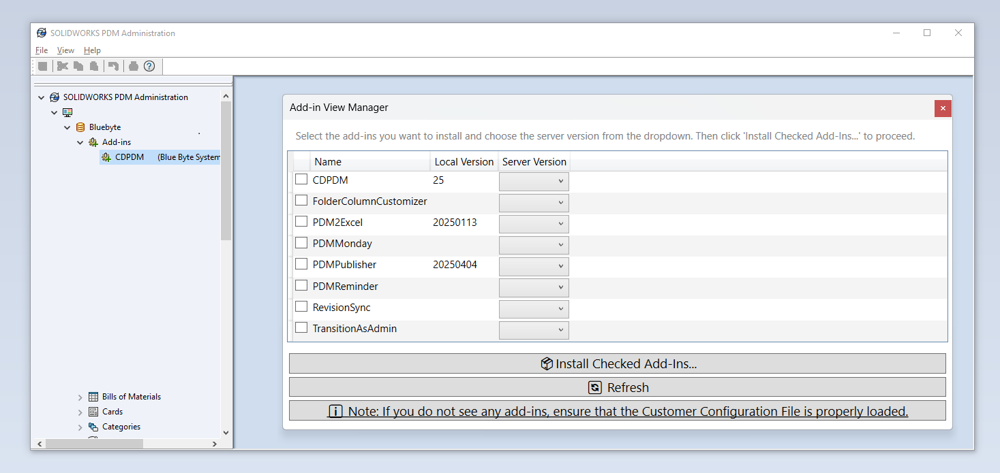

Important
CDPDM is now PDMDeploy. While screenshots and video tutorials are still referencing CDPDM, the changes in PDMDeploy are minimal.
Continuous Delivery
PDMDeploy is a PDM add-in by Blue Byte Systems Inc. that facilitates the deployment of PDM and task add-ins developed for you.
The add-in communicates with our servers and allows the installation of all versions of your PDM add-ins.
Advantages
The advantages of using PDMDeploy are numerous:
✔️ No need to ask for or download CEX files.
✔️ Ability to switch between versions.
✔️ The conventional process of installing and updating add-ins is very tedious and time-consuming.
Where to Find PDMDeploy
If we have a developed a custom solution for you:
PDMDeploy can be requested by via email and is mentioned during our customer onboarding process.
You will need the following assets from Blue Byte Systems to start using PDMDeploy:
PDMDeploy CEX file.
Your Customer Configuration File.
If you have purchased a PDM product from us:
Your Blue Byte Systems Inc account has all the information you need. You can access your account from this link here.
From the Downloads tab, please download the archive file that contains
PDMDeploy.cexand the Customer Configuration File.
Note
If you have purchased one of our PDM products and have had us develop a custom solution for you, please reach to us so we can generate a Customer Configuration File that lets you access all of your assets.
How to Install
Locate
PDMDeploy.cex.In Windows 11, 10, and 7, internet downloads are blocked. Right-click on the CEX file, go to Properties, check Unblock, then click Apply and OK.
Open the Administration tool.
Log in to the vault. Please ensure you use a PDM user with Edit Add-Ins permission.
In the Administration tool, click File > Open and browse to the
PDMDeploy.cexfile.Drag and drop the add-in from the CEX window onto the Add-ins node and wait for a few moments for PDMDeploy to be installed.

Configuration
Locate your Customer Configuration File.
You can upload the Customer Configuration File via the Administration tool.
Right-click on the add-in and click Upload Customer Configuration File...
Browse to the Customer Configuration File.

Note
You can configure the settings of PDMDeploy by adding the credentials of the Customer Configuration File manually. Contact support for help with the Settings... dialog.
Installing/Updating Add-ins
Right-click on PDMDeploy under Add-ins in the Administration tool and click Update AddIns...
This process may take a few moments depending on how many add-ins are in your vault.
You will be prompted with a window like the following:

Check the add-in(s) you'd like to install.
Pick the version(s) from the Server Version column.
Click on Install Checked Add-Ins... to install.
PDMDeploy will ask you if you want to restart PDM. This may be needed to do after every add-in update.
Note
Please allow for a few moments after you click Install Checked Add-Ins. The add-in will be downloaded unblocked and added to the vault. This operation includes suppressing some PDM dialog boxes.